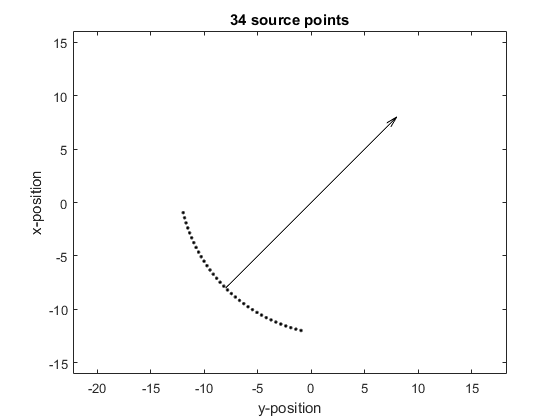

makeCartArc
Create evenly distributed Cartesian points covering an arc.
Syntax
[points, scale] = makeCartArc(kgrid, arc_pos, radius, diameter, focus_pos)
Description
makeCartArc creates a 2 x num_points array of the Cartesian coordinates of points evenly distributed over an arc.
Examples
% create grid Nx = 32; Ny = Nx; dx = 1; dy = dx; kgrid = kWaveGrid(Nx, dx, Ny, dy); % create arc arc_pos = [-8, -8]; radius = 15; diameter = 16; focus_pos = -arc_pos; points = makeCartArc(kgrid, arc_pos, radius, diameter, focus_pos); num_points = size(points, 2); % plot points figure plot(points(2,:), points(1,:), 'k.') % plot beam axis dp = focus_pos-arc_pos; hold on quiver(arc_pos(2), arc_pos(1), dp(2), dp(1), 0, 'k') % adjust plot axes axis(0.5*[kgrid.y_size .* [-1, 1], kgrid.x_size .* [-1, 1]]) axis equal xlabel('y-position') ylabel('x-position') title(sprintf('%d source points', num_points))
Inputs
kgrid |
the kgrid object on which the simulation will take place |
arc_pos |
centre of the rear surface of the arc given as a two element vector [bx, by] [m] |
radius |
radius of the arc [m] |
diameter |
diameter of the opening of the arc [m] |
focus_pos |
any point on the beam axis of the arc given as a two element vector [fx, fy] [m] |
Outputs
points |
2 x num_points array of Cartesian coordinates |
scale |
scaling factor relating the density of Cartesian points to the density of kgrid nodes |
See Also
offGridArc